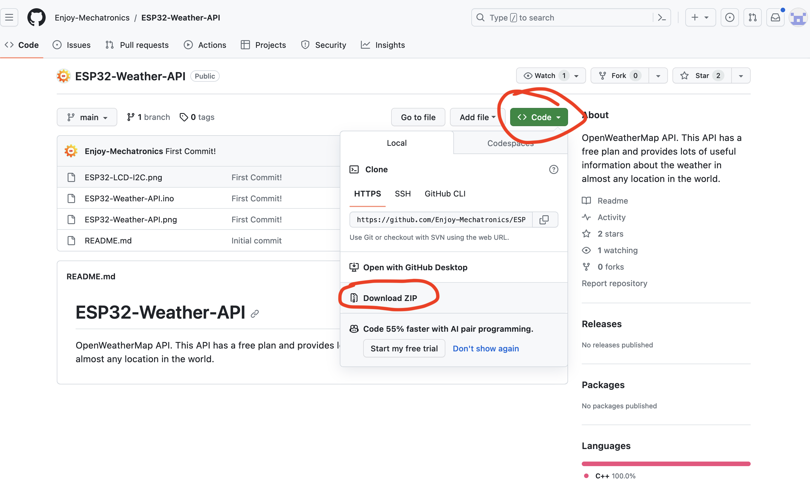

<br>
#### Week 9: Radio, WiFi, Bluetooth (IoT)
I remember royally failing at understanding how to use the Bandcamp API years ago when I tried to streamline the physical product fulfillment part of Biophilia Records. For this reason, I was determined to figure out how to use it this week. I royally failed again, because I can't figure out how to use Bandcamp's API. I was, however, able to find a different API that I did manage to understand. I clicked on the <a href="https://github.com/public-apis/public-apis">PS70 site link of public APIs</a> and found the <a href="https://https://openweathermap.org/api">Open Weather API</a>.
This week involved a lot of YouTube watching because I have no prior experience dealing with any of this. After searching for Arduino, ESP32 and API, I serendipitously found this video <iframe width="560" height="315" src="https://www.youtube.com/embed/AsNh1Z-iihw?si=NSs__E4gMVyrVaDe" title="YouTube video player" frameborder="0" allow="accelerometer; autoplay; clipboard-write; encrypted-media; gyroscope; picture-in-picture; web-share" allowfullscreen></iframe>
I want to use an LCD screen for my final project, so this API/Arduino project was appealing to me.
I gathered the ESP32 board and the 2x16 LCD from the shop. Luckily there were I2C modules attached to the LCDs-- had there not been, I would have needed significantly more jumper cables.
It might not seem like a big accomplishment, but I am proud that I now sort of understand github file links. Prior to this week, I had no idea what I was looking at but now I know how to download the files:

In order for the API to work, I needed to open an account with Open Weather in order to be given an API key: 6d401f2b44c97316f73b3d709be89c0f
I also had to find out the coordinates for Boston, which after a quick google search, are: 42.3601° N, 71.0589° W
<img src="../images/APIkey.jpg" alt="github page" width="500" height="130">